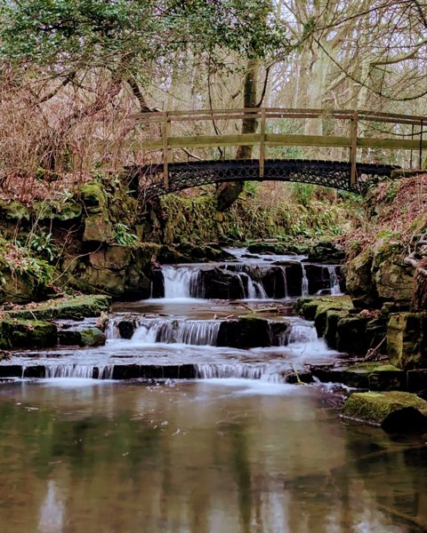
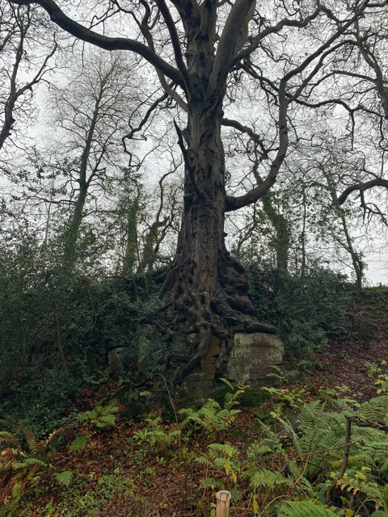

Cambo Den
← All galleriesSome of the structural features to be found in Cambo Den

Cambo burn waterfall Rocks roots
Rocks roots

Tree roots 01Some of the structural features to be found in Cambo Den

Cambo burn waterfall
Rocks roots

Tree roots 01